目次
はじめに
第1章: 第二の脳の設計思想——Obsidianが「知識資産」になる理由
第2章: 知識アーキテクチャの構築——PARA×Zettelkasten設計術
第3章: 知識を繋げる技術——リンクとDataviewで知識ネットワークを作る
第4章: AIと組む——Obsidian×生成AIで知識生産を10倍にする
第5章: 知識資産を武器に変える——アウトプット・副業・ビジネス活用
おわりに
はじめに
あなたは今、どのくらいの情報を毎日受け取っているだろうか。
ニュース、SNS、YouTube、ポッドキャスト、読書、仕事のメール、会議でのアイデア——現代人が1日に受け取る情報量は、江戸時代の人が一生で受け取る情報量に匹敵すると言われている。
**情報の洪水の中で、あなたの大切な知識はどこへ消えていくのか。
**
「あの本で読んだ内容、なんだったっけ」「先月のセミナーで聞いた手法、どこにメモしたっけ」「あのアイデア、絶対どこかに書いたはずなのに」——こんな経験を繰り返していないだろうか。
私たちの脳は、**記憶するためではなく、考えるために進化した。
**
だからこそ、記憶する仕事は「外部の脳」に委ねる必要がある。
Obsidianはその「第二の脳」として、これ以上ない道具だ。
しかし、単にノートを保存するだけでは意味がない。
本書が目指すのは、知識を「ただ貯める」状態から「資産として育て、使う」状態への転換だ。
本書は、Obsidianを使ったことがある・あるいは使い始めた中級者に向けて書いた。
基本操作の説明は最小限にとどめ、「知識を資産に変える設計思想」と「使える仕組みの実装」に集中している。
読み終えたとき、あなたのObsidianは「ノートの墓場」から「知識の複利エンジン」へと変わっているはずだ。
01第1章: 第二の脳の設計思想——Obsidianが「知識資産」になる理由
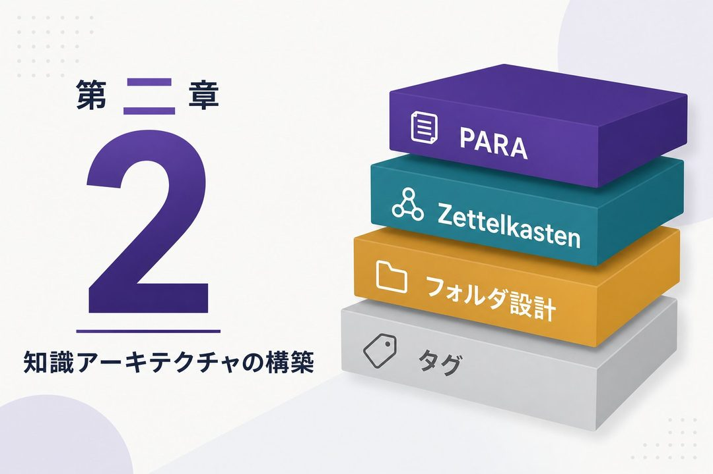
第1章: 第二の脳の設計思想
ノートアプリはなぜ「墓場」になるのか
多くの人がObsidianを始めて最初に感じることは、「なんだか自由すぎて何をすればいいかわからない」という戸惑いだ。
その結果、ノートを作り続けるが、一度書いたら二度と開かない——そんな「ノート墓場」が形成される。
これはObsidianが悪いのではない。
**設計思想の欠如が問題だ。
**
従来のノートアプリの多くは「フォルダ型」か「検索型」のどちらかだ。
フォルダ型（例: Evernote）は情報を箱に詰める発想で、箱が増えるほど管理が複雑になる。
検索型は全文検索に頼るため、「何を検索すればいいか」がわからないと機能しない。
Obsidianが革命的なのは、「リンク型」という第三の道を採用している点だ。
人間の脳がニューロンをシナプスで繋ぐように、ノートとノートを双方向リンクで繋ぐ。
これにより、「思いがけない知識の接続」が自然に起きる環境が生まれる。
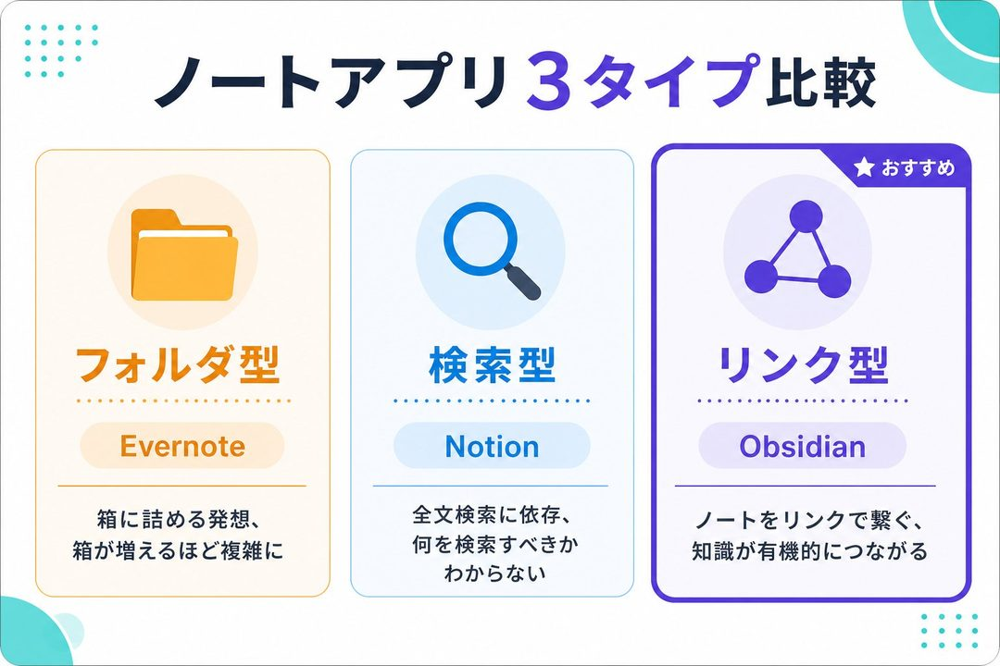
ノートアプリ3タイプ比較
Obsidianの本質——なぜローカル・Markdownなのか
Obsidianの最大の特徴はローカルファーストであることだ。
すべてのデータは自分のコンピュータ上にあり、インターネット接続なしで動作する。
フォーマットはMarkdown（.md）テキストファイル——つまり、**あなたのデータはどんなアプリにも依存しない。
**
これは単なる技術的な特徴ではない。
哲学だ。
クラウド依存のサービスはいつでもサービス終了・料金値上げ・仕様変更のリスクがある。
10年後もあなたの知識にアクセスできる保証があるのは、ローカルのMarkdownファイルだけだ。
**知識資産として長期保有するなら、ロックインのないオープンフォーマットが必須条件になる。
**
また、Markdownは習得コストが低く、プログラマーからビジネスパーソンまで誰でも書ける。
見出し（#）、リスト（-）、太字（**）、リンク（[[]]）——これだけ覚えれば十分だ。
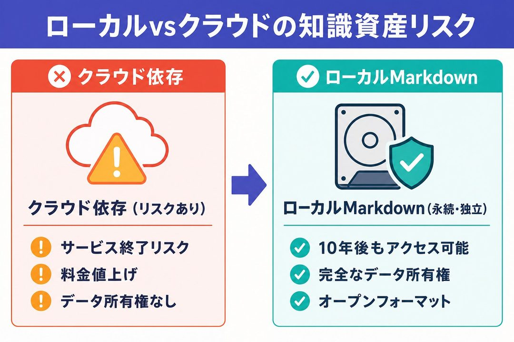
ローカルvs クラウドの知識資産リスク
なぜNotionではなくObsidianなのか
Notionも優れたツールだ。
チームでの協働、データベース機能、見た目の美しさ——Notionが勝る点は多い。
では、**個人の知識資産化に関してはなぜObsidianが優れているのか。
**
**速度の問題。
** Notionはクラウド処理のため、ページ読み込みに0.5〜2秒かかる。
Obsidianはローカル処理のため、10,000ノートでも0.05秒以内で開く。
毎日100回ノートを開くなら、年間で5時間以上の差になる。
**リンクの思想の違い。
** Notionのリンクは「ページへの参照」に過ぎない。
ObsidianのバックリンクはGraph Viewで可視化され、「知識のつながり」が一目でわかる。
これは単なる見た目の違いではなく、**思考の質に直結する差異だ。
**
**プラグインエコシステム。
Obsidianはオープンソースのプラグインが1,000種類以上**存在する。
Dataview、Templater、QuickAdd——これらを組み合わせると、どんな専門分野の知識管理にも対応できる。
一方、Notionはチームプロジェクト管理・データベース管理には明確に優れている。
**使い分けの答えはシンプルだ：「個人の深い知識資産化＝Obsidian、チーム共有・プロジェクト管理＝Notion」。
**
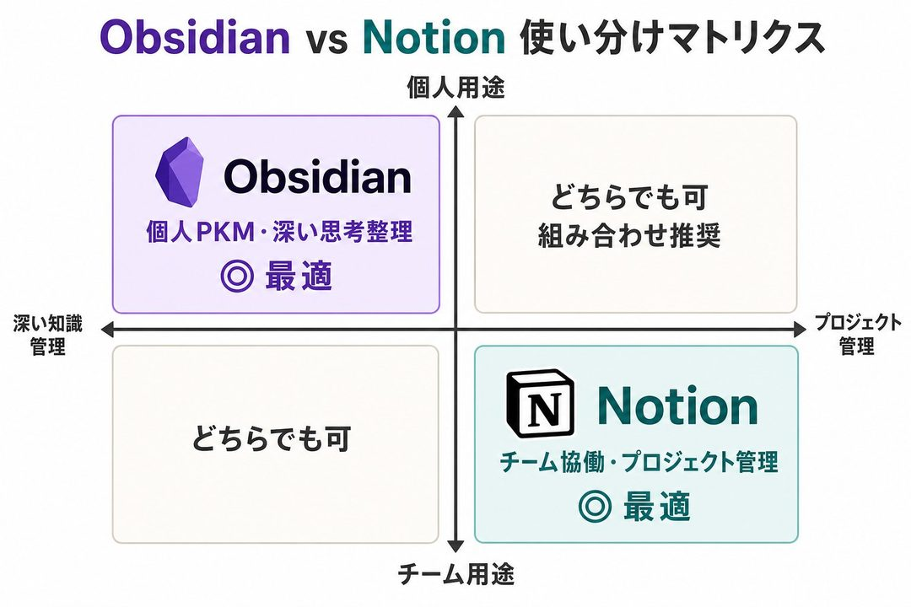
Obsidian vs Notion 使い分けマトリクス
「知識資産」とは何か——インプットとアウトプットの変換率
ここで「知識資産」という概念を定義しておこう。
資産とは使うことで価値を生み出すものだ。
本棚に積んだだけの本は「知識の在庫」であり、資産ではない。
**使い、組み合わせ、アウトプットに変換することで、初めて「資産」になる。
**
Obsidianの設計次第で、知識の「変換率」は劇的に変わる。
| 状態 | 特徴 | 変換率 |
|------|------|--------|
| ノート墓場 | 書くが読み返さない | 5%以下 |
| 整理済みアーカイブ | フォルダ整理できているが活用なし | 20%程度 |
| 知識ネットワーク | リンクで繋がり、意外な接続が生まれる | 60%以上 |
| 知識資産エンジン | AI連携・定期レビュー・アウトプット変換まで仕組み化 | 80%以上 |
本書を通じて目指すのは、「知識資産エンジン」の状態だ。
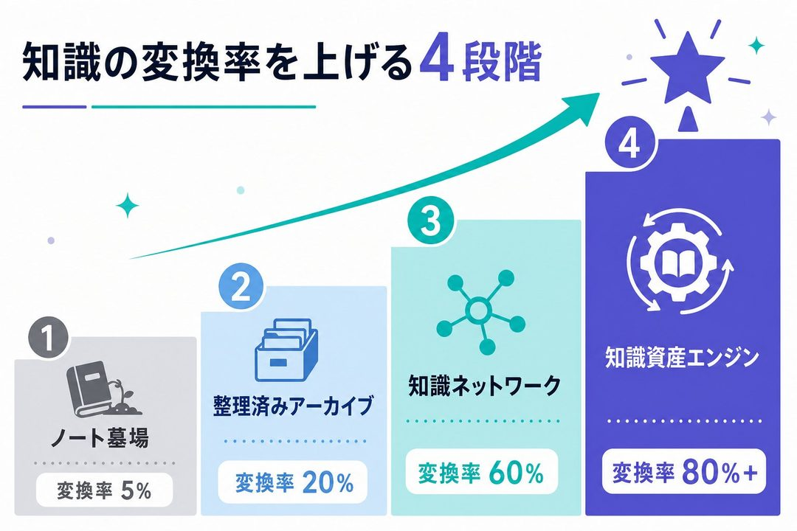
知識の変換率を上げる4段階
中級者が陥る「設定沼」と「完璧主義の罠」
Obsidianを使いこなそうとする中級者が最初に陥るのが「設定沼」だ。
新しいプラグインを試し、フォルダ構成を考え直し、テーマを変え、CSSを編集する——結果として「Obsidianの設定」に時間を使い、「知識の蓄積」ができていないという本末転倒な状態になる。
もう一つが「完璧主義の罠」だ。
完璧なフォルダ構成ができるまでノートを書かない。
完璧なテンプレートができるまで記録しない。
**完璧を目指す間に、知識は頭から消えていく。
**
解決策はシンプルだ：「今すぐ書いて、後で整理する」インボックス思考に切り替えることだ。
次章でその具体的な設計方法を解説する。
02第2章: 知識アーキテクチャの構築——PARA×Zettelkasten設計術
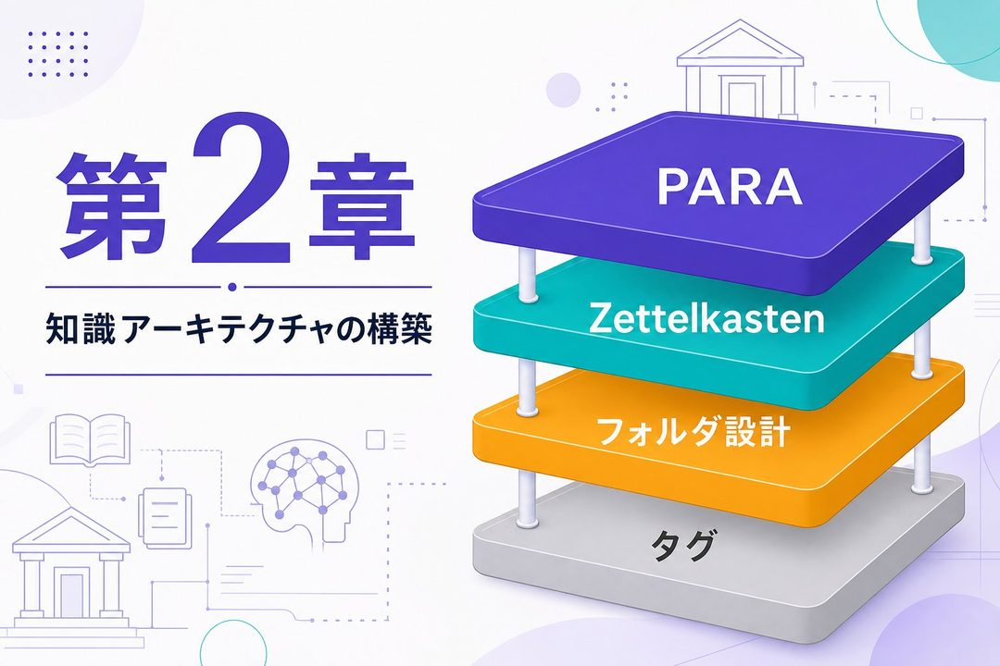
第2章: 知識アーキテクチャの構築
なぜフォルダ設計が「知識の寿命」を決めるのか
フォルダ設計は地味に見えて、知識資産の長期的な価値を左右する最重要要素だ。
設計が悪いと、ノートの数が増えるにつれて「どこに何があるかわからない」状態になる。
一方、設計が良ければ、ノートが増えるほど**知識ネットワークが豊かになり、価値が加速度的に増す。
**
本章では、世界中のPKM（個人知識管理）実践者の間で最も評価の高い2つのフレームワーク——PARAとZettelkasten——を組み合わせた実践的設計術を解説する。
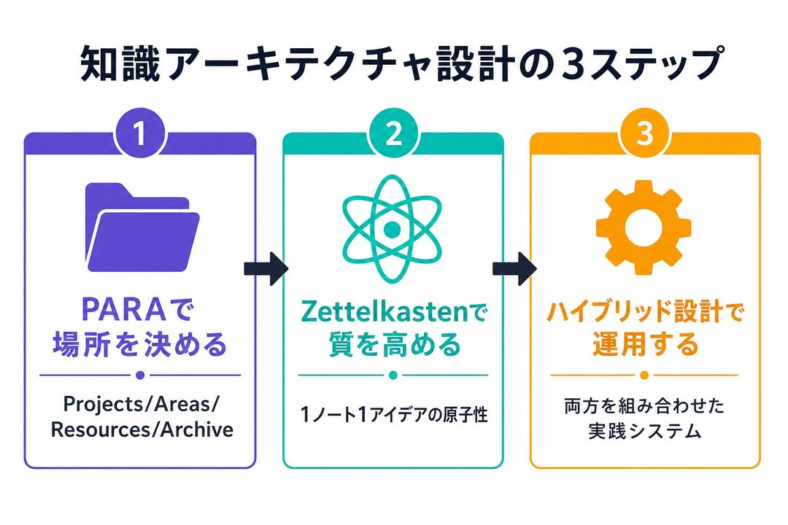
知識アーキテクチャ設計の3ステップ
PARA法——「行動」に紐づく4つの場所
PARAはTiago Forte（ティアゴ・フォルテ）が提唱したフレームワークで、**すべての情報を「行動との関連性」で分類する。
**
P = Projects（プロジェクト）
締め切りがあり、明確なゴールを持つ作業。
例：「来月の社内プレゼン」「副業ブログの記事10本執筆」「読書会の準備」
A = Areas（領域）
継続的に維持・管理が必要な責任範囲。
ゴールはなく、「水準を維持する」概念。
例：「健康管理」「仕事のスキル開発」「家族・育児」「財務管理」
R = Resources（リソース）
将来役に立つかもしれない参考情報。
特定のプロジェクトや領域に紐づかない情報。
例：「AI活用テクニック集」「読書ノート」「気になった名言集」
A = Archive（アーカイブ）
完了したプロジェクトや不活性になった情報の保管庫。
削除せず、いつでも参照できる。
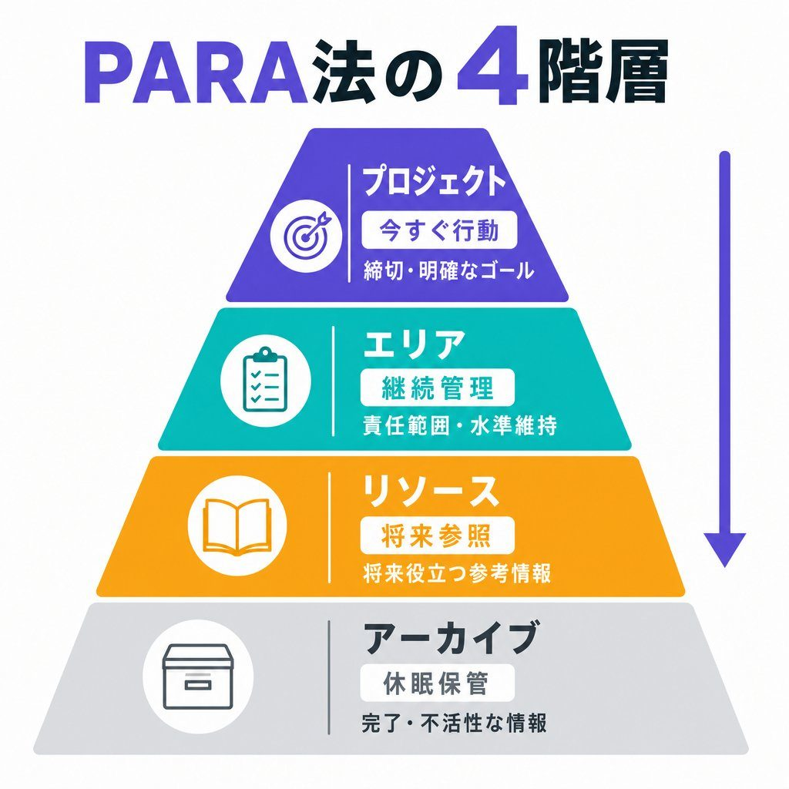
PARA法の4階層
**PARAの最大のメリットは「分類に迷わない」ことだ。
**
「このノートはどこに置くべきか」という問いを、「このノートは今のプロジェクトと関係があるか」という問いに変換する。
答えがYesならProjects、Noなら次の問いへ——という判断ツリーで、**5秒以内に分類先が決まる。
**
Obsidianでのフォルダ設計——実践的構成案
PARAを基本にしながら、Obsidianならではのフォルダを加えた実践的構成を紹介する。
**000_Inboxの重要性。
** ここがすべての入口だ。
「分類は後でいい。
まず書く。
」——この原則がObsidianを「書けるツール」に保つ。
毎週30分の「Inboxレビュー」で、適切なフォルダに移動するか、削除するかを決める。
**500_Zettelkastenが資産化の鍵。
** このフォルダについては次節で詳しく説明する。
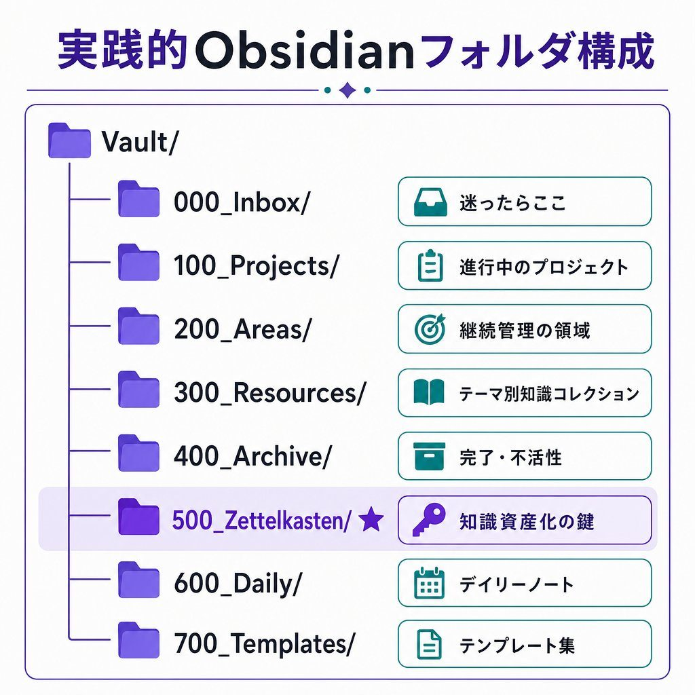
実践的Obsidianフォルダ構成
Zettelkasten——「原子ノート」で知識を増殖させる
ZettelkastenはドイツのNiklas Luhmann（ニクラス・ルーマン）が開発したカード式知識管理システムだ。
彼は70冊以上の著書と400本以上の論文をこのシステムで生み出した。
核心原則は「原子性（Atomicity）」だ。
1つのノートには1つのアイデアだけを記録する。
複数のアイデアが混在するノートは、そのアイデアの数に分割する。
**なぜ原子性が重要なのか。
**
アイデアが原子的であるほど、他のアイデアとのリンクが増える。
「AIと生産性」というノートより、「AIによる検索時間75%削減」というノートの方が、多くの文脈でリンクされる。
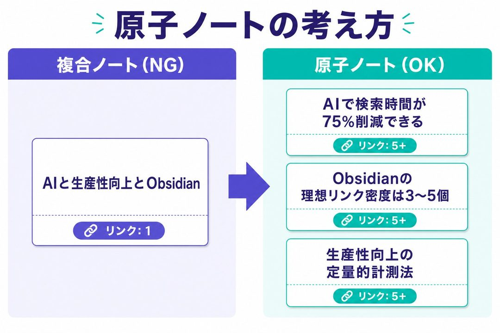
原子ノートの考え方
Zettelkastenノートの書き方（3要素）
1. 見出し（タイトル）: アイデアを1文で表現。
検索キーワードになる
良い例：「Obsidianのリンク密度は1ノートあたり3〜5個が理想」
悪い例：「Obsidianについてのメモ」
2. 本文（200〜800字）: そのアイデアを自分の言葉で説明。
コピペ禁止
自分の言葉で書き直すことで、理解が深まり「自分の知識」になる
3. リンク: 関連する既存ノートへの[[ウィキリンク]]を最低2〜3個追加
タグ戦略——「使えるタグ」の設計原則
タグは「フォルダで分類しきれない横断的な属性」に使う。
タグ設計の3原則：
1. 階層は最大3レベル — `#ツール/Obsidian/プラグイン`
2. 総数は50個以下 — タグが多すぎると管理コストが逆転する
3. 用途ラベルで分類 — `#読了` `#要アクション` `#ひらめき` `#実験中`
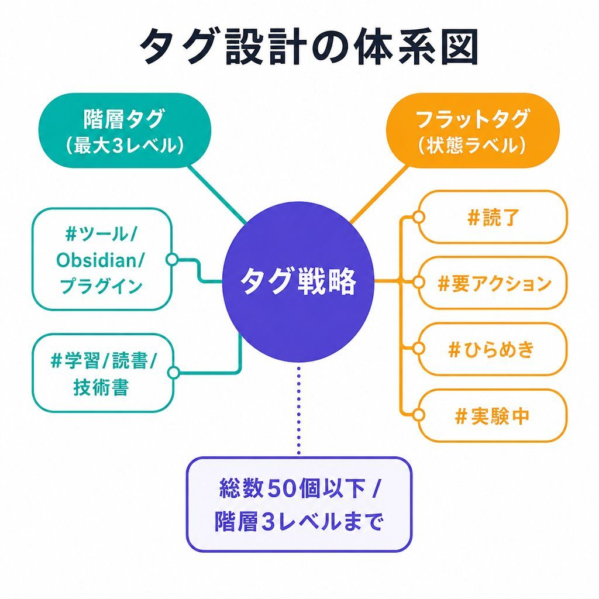
タグ設計の体系図
**タグより「リンク」を優先せよ。
**
Obsidianの本質はリンクにある。
タグは補助的な属性付けに留め、ノート間の関係性はリンクで表現する方が知識ネットワークは豊かになる。
PARA×Zettelkastenのハイブリッド運用フロー
情報が入ってきたとき（インプット時）：
1. 000_Inboxに即メモ（分類しない）
2. 週次レビューでPARA分類へ移動
3. 価値が高いアイデアは500_Zettelkastenに原子ノートとして切り出す
知識を活用したいとき（アウトプット時）：
1. 関連する原子ノートをグラフビューで探す
2. リンクを辿って「意外な接続」を発見する
3. 発見した知識の組み合わせをアウトプットに変換する
このサイクルが回り始めると、**「知識の複利」が発生する。
**
過去の自分のノートが、未来の自分の思考を加速する。
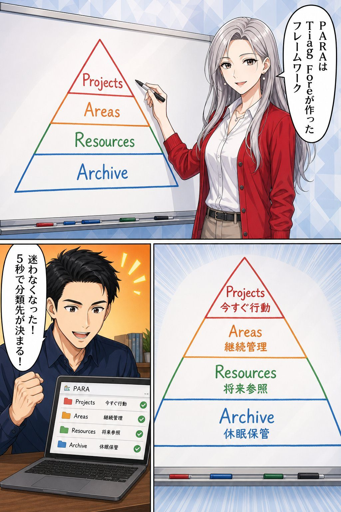
03第3章: 知識を繋げる技術——リンクとDataviewで知識ネットワークを作る
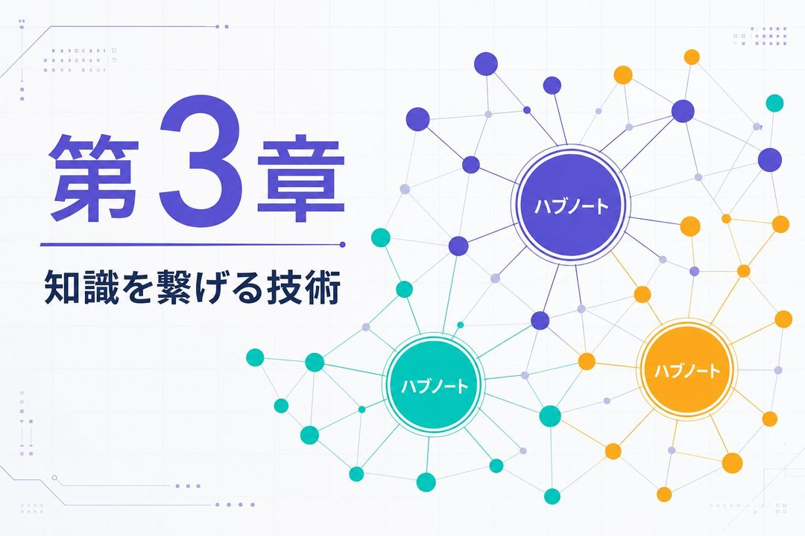
第3章: 知識を繋げる技術
リンクは「思考のインフラ」だ
Obsidianのリンク機能を「単なる参照」と思っているなら、その認識を今すぐ改める必要がある。
**リンクは思考のインフラだ。
**
脳内で「連想」が起きるのは、ニューロン同士がシナプスで繋がっているからだ。
ObsidianのWikiリンク（`[[ノート名]]`）は、まさにそのシナプスを人工的に作り出す行為だ。
リンクが増えるほど、「思いがけない知識の接続」が起きやすくなる。
リンクの種類と使い分け：
| リンクの種類 | 使い方 | 例 |
|------------|--------|-----|
| 直接リンク | `[[ノート名]]` | `[[Obsidianの設定]]` |
| エイリアスリンク | `[[ノート名\|表示名]]` | `[[Obsidianの設定\|設定]]` |
| ブロックリンク | `[[ノート名#見出し]]` | `[[第2章#PARA法]]` |
| 埋め込み | `![[ノート名]]` | `![[テンプレート/日次]]` |
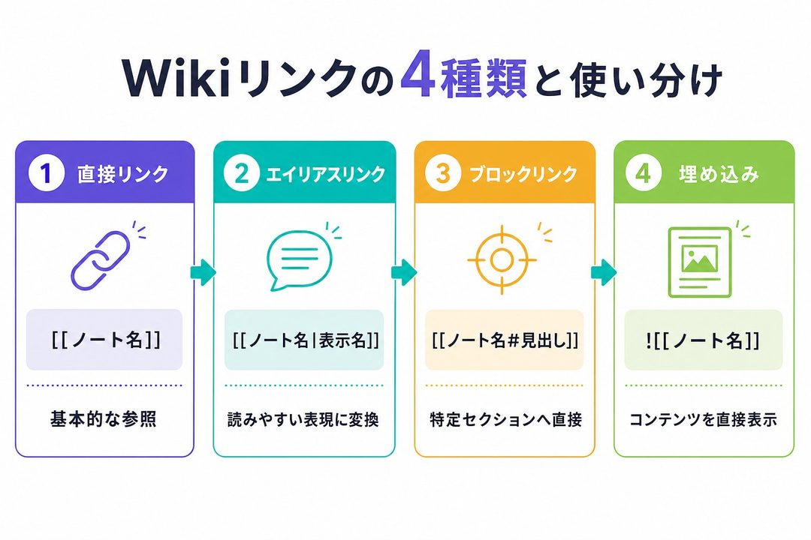
Wikiリンクの4種類と使い分け
戦略的リンクの付け方——「リンクする価値のある関係性」を見極める
ただやみくもにリンクを貼れば良いわけではない。
1ノートあたり3〜5個のリンクが適切な密度とされている。
リンクを貼るべき3つの関係性：
1. 因果関係 — 「A が B の原因である」「A を使うと B が起きる」
例：`[[デイリーノート習慣]]` → `[[Inbox整理の自動化]]`
2. 類似・対比関係 — 「A と B は似ているが、C の点で異なる」
例：`[[PARAフレームワーク]]` ↔ `[[Zettelkasten]]`
3. 応用関係 — 「A の原則を B の文脈に適用する」
例：`[[GTDの週次レビュー]]` → `[[ObsidianのInboxレビュー]]`
**「将来の自分へのメモ」としてリンクを付ける。
**
「3ヶ月後の自分がこのノートを読んだとき、どのノートを参照すると理解が深まるか」——この問いで判断すると、価値あるリンクが選べる。
グラフビューの読み方——知識地図を活用する
グラフビュー（`Ctrl/Cmd + Shift + G`）は、Obsidianの最も視覚的な機能だ。
ノートをノード（点）、リンクをエッジ（線）として表示し、知識ネットワーク全体を俯瞰できる。
グラフビューの3つの活用法：
① 孤立ノートの発見
リンクが一つもないノートは「知識の孤島」だ。
発見したら、既存ノートとの関連を探してリンクを追加する。
② ハブノートの特定
多くのリンクが集まるノートは「知識のハブ」だ。
これがあなたの「得意領域」「よく考えるテーマ」を示している。
③ クラスターの発見
密集したノートのグループは、あなたの潜在的な専門知識の塊だ。
このクラスターは、ブログ記事や電子書籍の「章」のベースになり得る。
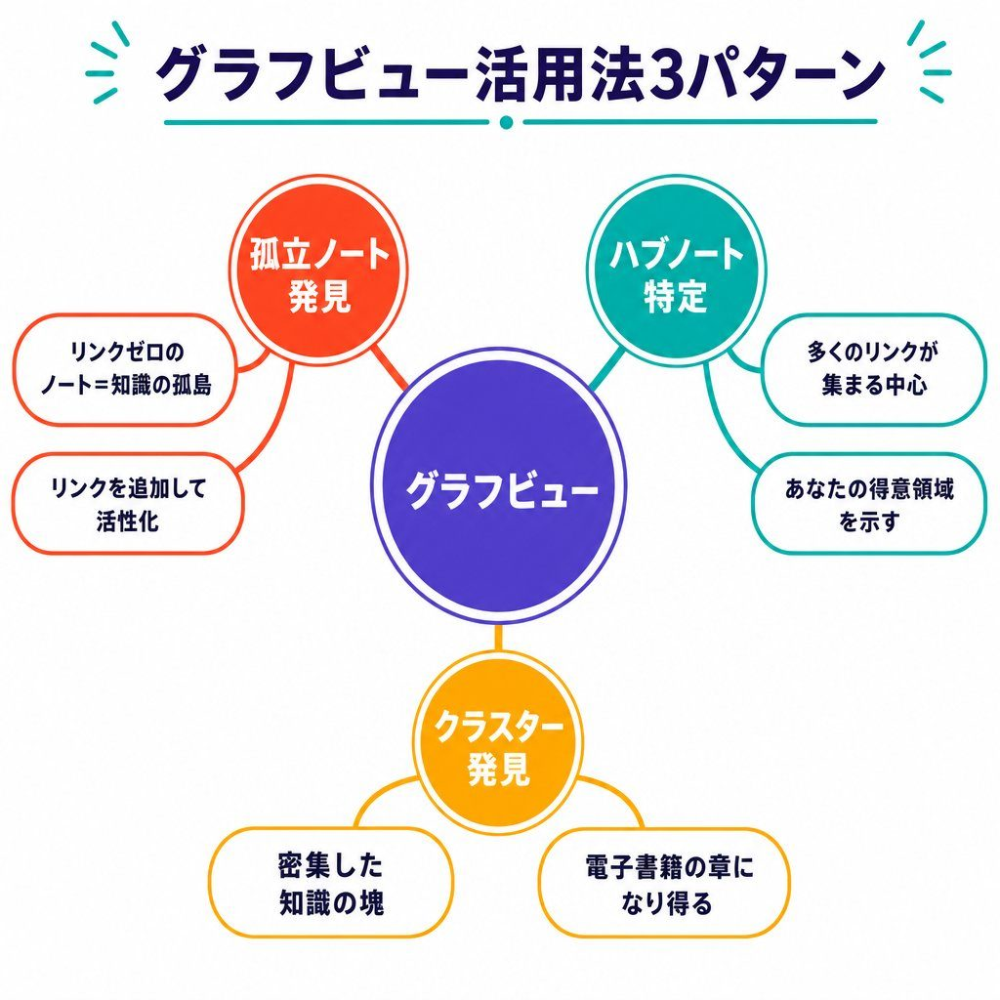
グラフビュー活用法3パターン
Dataviewプラグイン——知識のダイナミックダッシュボード
Dataviewは、Obsidianの知識管理を次のレベルへ引き上げるプラグインだ。
**SQLライクなクエリで、ノートを動的に抽出・集計できる。
**
10,000ノートが蓄積されても、Dataviewなら0.3秒以内で目的のノートを発見できる。
インストール: `設定` → `コミュニティプラグイン` → `Dataview` を検索してインストール
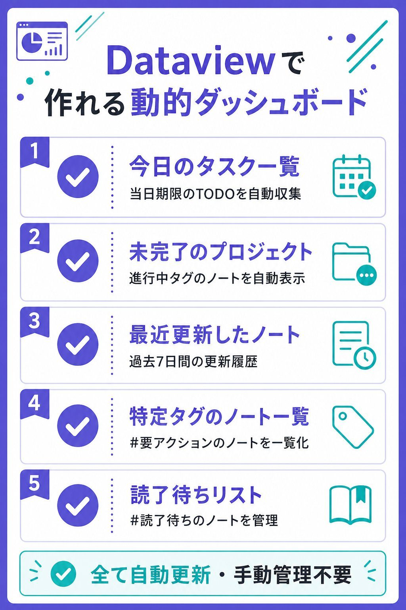
Dataviewで作れる動的ダッシュボード
基本クエリの書き方（実例集）
→「100_Projects内で「進行中」タグが付いたノートを更新日順に10件表示」
→「リンクが2個以下のZettelkastenノート（強化が必要なノート）を一覧表示」
→「デイリーノートの作成日をカレンダー表示（継続率の可視化）」
週次レビューダッシュボードの作り方
専用ノート「_ダッシュボード.md」を作成し、以下のDataviewクエリを埋め込む：
今週の進行中プロジェクト一覧
今週作成した新しいZettelkastenノート
「要アクション」タグのノート
今週読了した本のノート
このダッシュボードを週次レビューの起点にすることで、**レビューの質と速度が劇的に向上する。
**
Templaterプラグイン——ノート作成を自動化する
Templaterは、テンプレートに動的な変数（日付、タイトル等）を自動挿入するプラグインだ。
**ノート作成の心理的ハードルを下げ、一貫したフォーマットを維持できる。
**
推奨テンプレート3種類：
① 読書ノートテンプレート
② ミーティングノートテンプレート
③ デイリーノートテンプレート
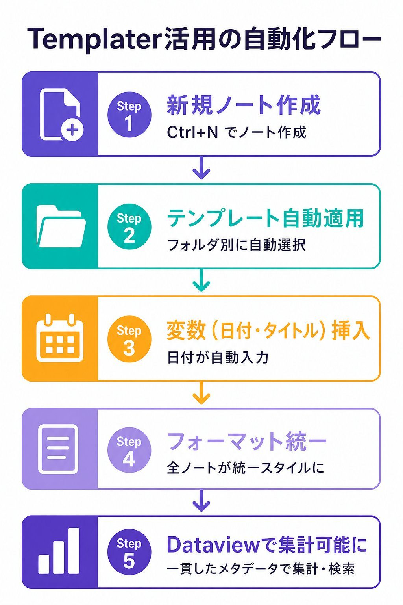
Templater活用の自動化フロー
QuickAddプラグイン——思考を瞬時にキャプチャする
「良いアイデアは2秒以内に記録しなければ消える」——これは誰もが体験したことだろう。
QuickAddは、ホットキー一つでInboxにメモを追加できるプラグインだ。
「コマンド + Q」→ テキスト入力 → Enterで完了。
**平均3秒でメモ完了。
**
Obsidianが開いていなくても、バックグラウンドからキャプチャできる。
設定手順（3分で完了）：
1. コミュニティプラグインからQuickAddをインストール
2. 「設定」→「QuickAdd」→「Add Choice」
3. 「Capture」を選択し、キャプチャ先を「000_Inbox/inbox.md」に設定
4. ホットキーを割り当て（例：`Alt + Q`）
QuickAddの応用パターン：
本を読みながら気になった引用をその場でキャプチャ
会議中に浮かんだアイデアをスマホのObsidianアプリから追加
ポッドキャストを聴きながら参考になった内容をメモ
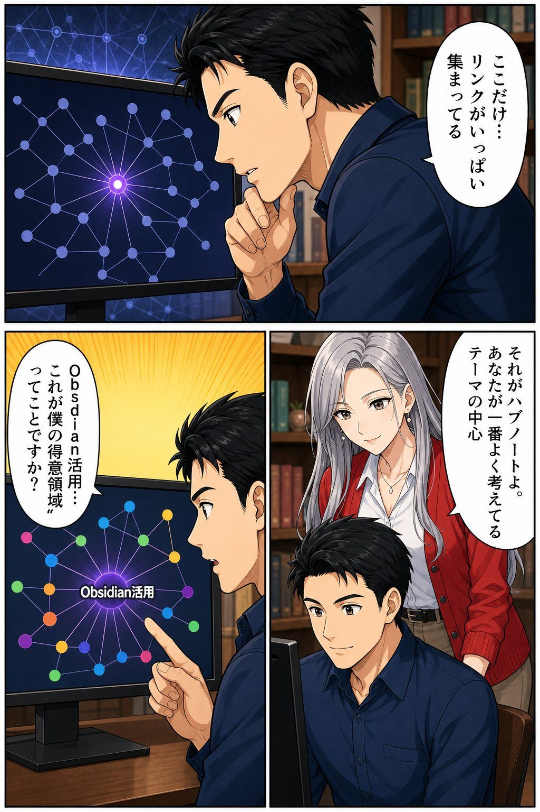
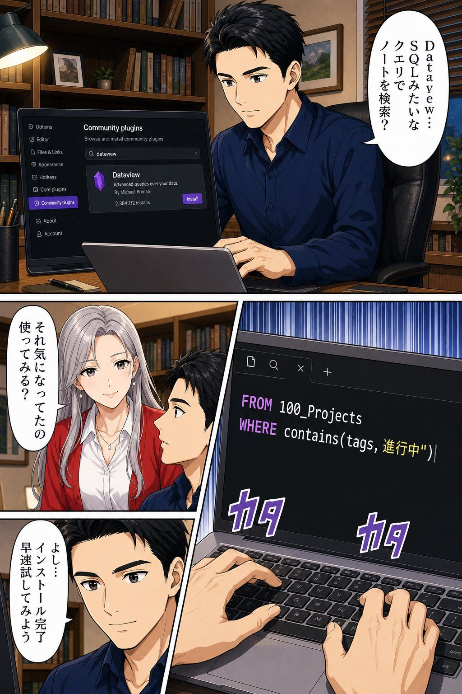
04第4章: AIと組む——Obsidian×生成AIで知識生産を10倍にする
第4章: AIと組む
AIはObsidianの「思考パートナー」になる
2025年以降、Obsidianとの組み合わせで最も大きな変化をもたらしたのは、生成AIとの連携だ。
AIをObsidianに組み込む価値は3つある：
① 情報収集の自動化 — Webの情報を自動要約してObsidianに取り込む
② 知識の整理支援 — 蓄積したノートをAIが分析・分類・接続する
③ アウトプット加速 — ノートを素材にして、AIが文章・企画・スライドを生成する
**「AIが代わりに考えてくれる」のではなく、「AIと一緒に考える」のが正しい使い方だ。
**
あなたの知識とAIの処理能力を掛け算することで、一人では到達できない質のアウトプットが生まれる。
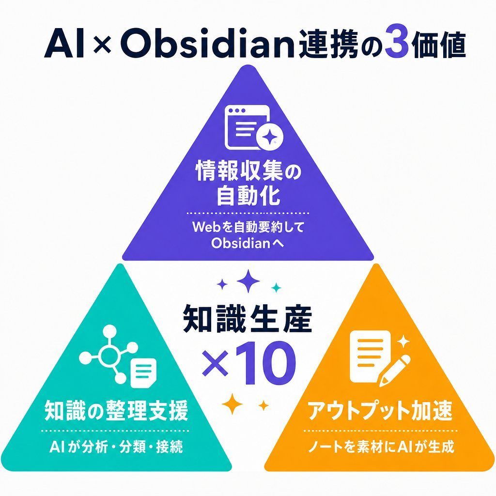
AI×Obsidian連携の3価値
Obsidian Web Clipper——情報収集を自動化する
Obsidian Web Clipperは、2024年末に公式リリースされたブラウザ拡張機能だ。
**Webページ全体、または選択したテキストをワンクリックでObsidianに保存できる。
**
従来の「コピペでメモ」が1〜3分かかっていたとすれば、Web Clipperは15秒以内で完了する。
さらに、AIによる自動要約機能が加わり、**「読まなくても要点がわかる」ノートが自動生成される。
**
セットアップ手順：
1. Obsidian Web Clipperをブラウザ（Chrome/Safari/Firefox）にインストール
2. Obsidianのローカルサーバーポートを設定（デフォルト: 27123）
3. 保存先フォルダを「000_Inbox/WebClips/」に設定
4. テンプレートを設定（URL・タイトル・日付・要約を自動記録）
AI要約テンプレートの設定例：
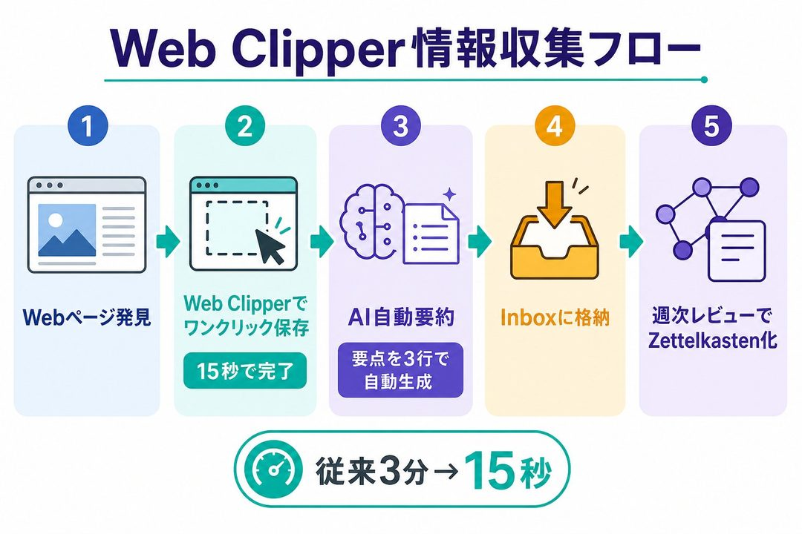
Web Clipper情報収集フロー
Copilotプラグイン——Obsidian内でAIと対話する
Copilotプラグインは、Obsidianの右サイドバーにAIチャット機能を追加する。
Claude・GPT-4o・Geminiなど、主要なAIモデルを切り替えて使用できる。
**最大の特徴は「ノートのコンテキストをAIに渡せる」ことだ。
**
現在開いているノートの内容をAIが読んだ上で、質問・要約・拡張・反論を行える。
実践的な使い方（中級者向け活用パターン）：
パターン1: アイデア発展
「このノートのアイデアをさらに深掘りする観点を5つ挙げてください」
→ 思考の偏りを補正し、見落としていた視点を発見できる
パターン2: リンク候補の提案
「このノートと関連しそうな既存ノートのキーワードを教えてください」
→ 手動ではわからなかったリンクの候補をAIが提案する
パターン3: 要約・整理
「このノートの内容を3行で要約し、Zettelkastenのタイトルとして適切な1文を作ってください」
→ 長いリサーチノートを原子ノートへ変換する作業を加速
パターン4: 反論・検証
「このノートの主張に対する反論や例外を教えてください」
→ 知識の品質を高め、偏った思考を修正する
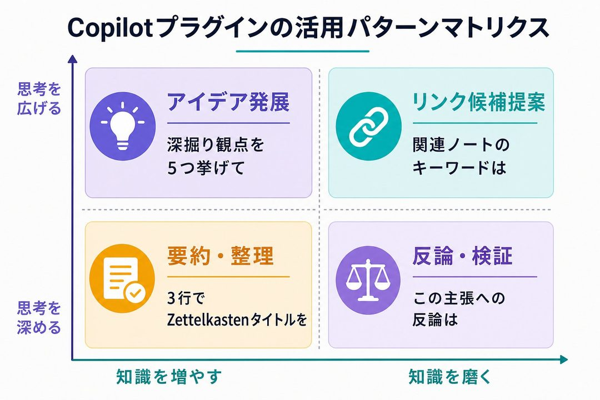
Copilotプラグインの活用パターンマトリクス
Smart Connectionsプラグイン——AIが「関連ノート」を自動発見する
Smart Connectionsは、全ノートのセマンティック（意味論的）類似度をAIで計算し、現在のノートと意味的に近いノートを自動提案するプラグインだ。
従来のキーワード検索では見つけられなかった「意外な接続」を、AIが自動的に提案する。
例えば、「読書ノート: 認知心理学」と「ビジネスのユーザーインタビュー設計」が意味的に近いと判定されることがある。
このような異分野間の接続から、**新しいアイデアが生まれる。
**
セットアップ：
1. コミュニティプラグインからSmart Connectionsをインストール
2. OpenAI APIキー（またはローカルAIモデル）を設定
3. Vault全体のインデックス作成（初回のみ、数分かかる）
4. 以降は新しいノートを開くたびに、右サイドバーに関連ノートが自動表示
注意点： OpenAI APIを使用する場合は利用料金が発生する（通常月数百円程度）。
プロンプトテンプレートをObsidianで管理する
AIを日常的に使う人が見落としがちなのが、「良いプロンプトの資産化」だ。
「うまくいったプロンプト」をその都度作り直している人は、知識の無駄遣いをしている。
Obsidianの「700_Templates/AI_Prompts/」フォルダに、使いまわせるプロンプトを蓄積することで、**AIの使い方も「資産化」できる。
**
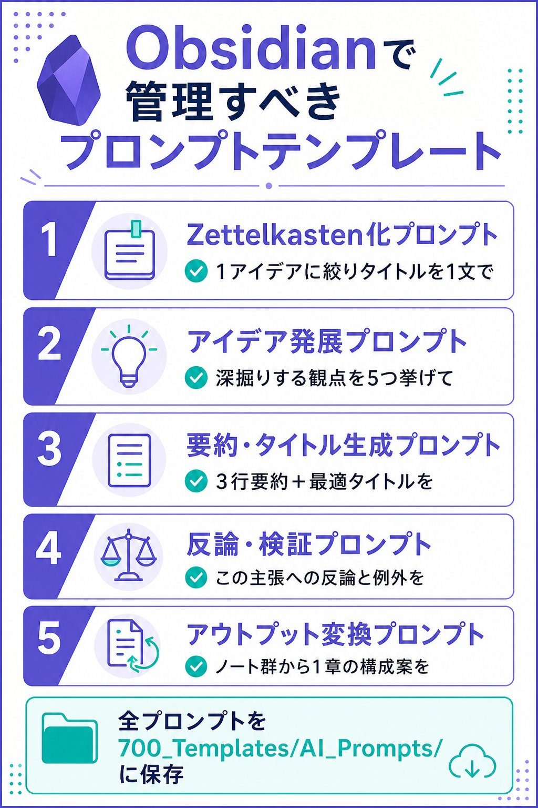
Obsidianで管理すべきプロンプトテンプレート
実践的プロンプト例（コピーして使える）：
Zettelkasten化プロンプト：
「以下の内容を1つのアイデアに絞り込み、200〜300字の原子ノートとして書き直してください。
タイトルは「〇〇は△△である」の形式で1文にしてください。
関連しそうなキーワードも3〜5個挙げてください。
[ここにテキストを貼り付ける]」
アウトプット変換プロンプト：
「以下のObsidianノート群を元に、Kindle電子書籍の1章分（約3,000字）の構成案を作ってください。
読者は〇〇（読者像）を想定しています。
[ここにノート内容を貼り付ける]」
Claude Code + Obsidian——エンジニアリング思考で知識を自動化する
2026年現在、Claude Codeを使った高度なObsidian自動化が可能になっている。
自動化できること：
指定フォルダのノートを自動分類・タグ付け
Inboxのノートを週次レビュー時に自動Zettelkasten化
関連ノートのリンクを自動提案・追加
知識ネットワークの弱点（孤立ノート）を自動検出してレポート
これはプログラミング経験がなくても、Claude Codeに自然言語で指示することで実現できる。
「Inboxフォルダの内容を見て、既存のZettelkastenノートとリンクできそうなものをリストアップして」——この一言で、Claude Codeが数百のノートを分析してリンク候補を提案する。
**Obsidianの知識管理をAIが「メンテナンス」してくれる時代が来ている。
**
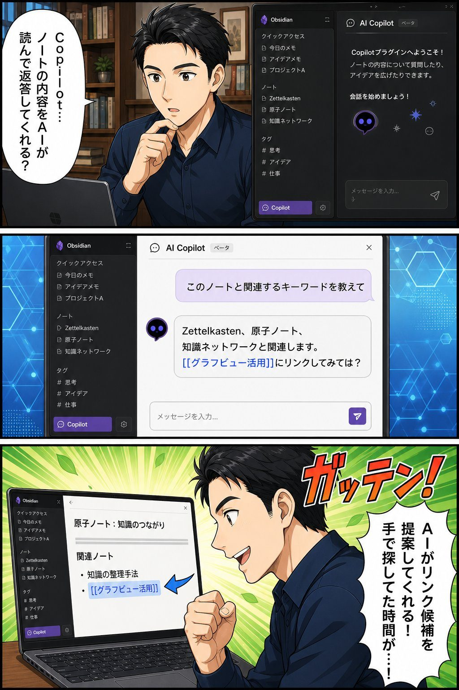
05第5章: 知識資産を武器に変える——アウトプット・副業・ビジネス活用
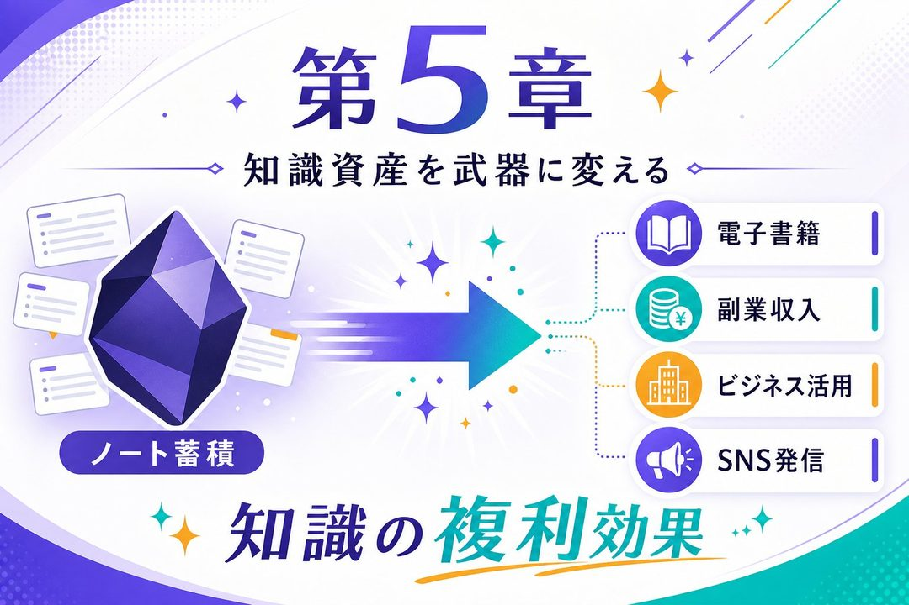
第5章: 知識資産を武器に変える
インプットとアウトプットは「別物」ではない
多くの人が「インプット（学ぶ）」と「アウトプット（発信・稼ぐ）」を別のフェーズと考えている。
しかし、**知識資産化の視点では、この2つは連続した同じプロセスだ。
**
Obsidianでノートを書く行為自体が、すでにアウトプットの準備になっている。
「自分の言葉で書く」こと、「リンクで繋げる」こと、「原子ノートに分解する」こと——これらはすべて、**後のアウトプットの「部品」を作る作業だ。
**
知識資産がアウトプットに変換される経路：
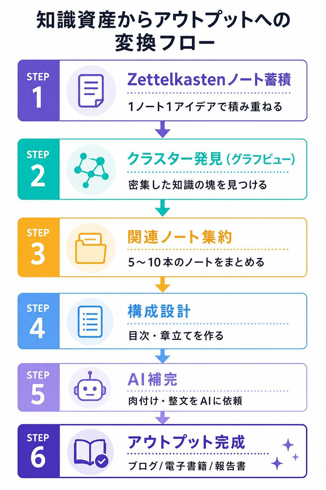
知識資産からアウトプットへの変換フロー
ブログ・SNS・電子書籍への変換戦略
ブログ記事への変換（1ノート→1記事の発想）
Zettelkastenの原子ノート1つ = ブログ記事1本の核となれる。
「AIによるObsidianの自動整理は月5時間の節約になる」というノートがあれば、それはそのままブログタイトルになる。
変換の手順：
1. 関連する原子ノート3〜5本を集める
2. AIで「この3本をつなぐ記事構成を作って」と依頼
3. 構成に沿って自分の経験・意見を追記
4. AIで「です・ます体に統一して読みやすく整えて」と依頼
SNSへの変換（ノートの「ひとつかみ」を発信する）
原子ノートの核心文（200字前後）は、そのままX（旧Twitter）への投稿になる。
「今日Obsidianで気づいたこと」シリーズとして毎日投稿すると、**Obsidianユーザーのフォロワーが増え、ニッチな専門性が認知される。
**
電子書籍への変換（クラスターを章に変える）
グラフビューで密集したクラスターを見つけたら、それが電子書籍の1章分になり得る。
5〜10本の原子ノートが集まるクラスターが5つあれば、5章構成の電子書籍が作れる。
Kindleで出版する場合、印税率は70%だ。
1冊500円の電子書籍が月100冊売れれば、月35,000円の印税収入になる。
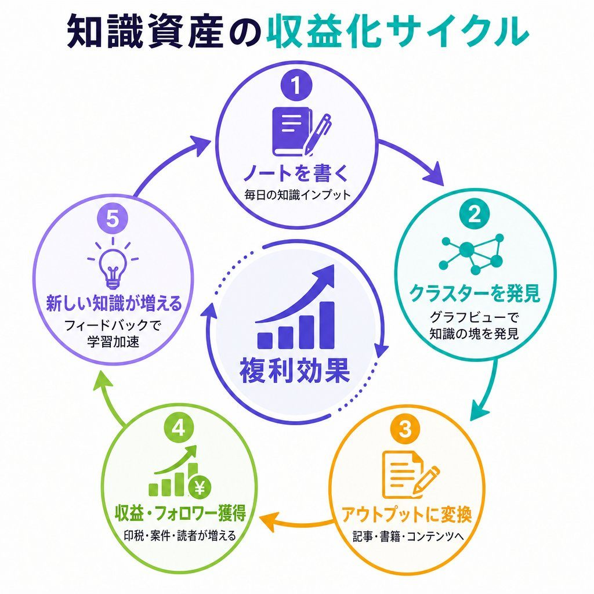
知識資産の収益化サイクル
副業・フリーランスへの活用——「知識専門家」として収益化する
Obsidianで体系化された知識は、**「専門性の証明」として直接収益に繋がる。
**
コンテンツ販売（note・ Brain・Gumroad）
Obsidianのテンプレート・設定ファイル・運用マニュアルを販売する。
需要は高く、初心者向けObsidianスターターキットは3,000〜10,000円で販売している人も多い。
コンサルティング・コーチング
Obsidianの知識管理体験を元に、「個人の知識管理設計」のコンサルタントとして活動できる。
時給3,000〜10,000円のセッションとして提供している人が実際にいる。
Zenn・Qiita（技術者向け）
Obsidian×プログラミング・AI活用ノウハウは技術者に需要が高い。
Zennの書籍機能を使えば、技術書として有料販売も可能だ。
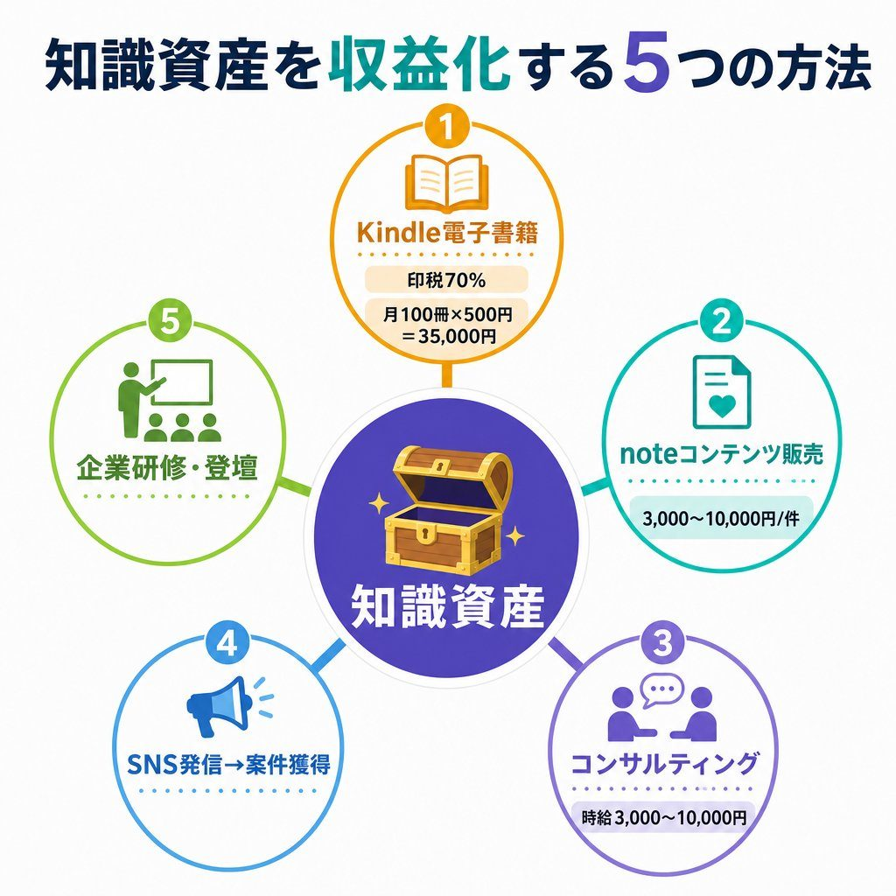
知識資産を収益化する5つの方法
ビジネス活用——組織の知識を資産化する
Obsidianは個人だけでなく、**小チームの知識管理にも有効だ。
**
Obsidian Sync（月約700円）またはiCloudドライブを使えば、同じVaultをチームで共有できる。
会議のアクションアイテム、プロジェクトの学びの記録、業界トレンドの共有——これらを全員が書き込めるObsidian Vaultに集約することで、「会社の知識資産」が形成される。
個人が組織で実践できる活用例：
毎週の1on1メモをObsidianに記録し、部下の成長を追跡する
競合分析ノートをZettelkastenで蓄積し、提案書の精度を上げる
業界ニュースのWeb Clipを蓄積し、毎月社内向けトレンドレポートを作る
**「知識管理を仕組み化している人」は、組織の中で希少価値を持つ。
**
意思決定の場面で「過去にも似たケースがあって、こういう結果でした」と即座に言える人間は、**「知識資産」そのものだ。
**
知識の複利——習慣化によって指数関数的に成長する
ここまでの内容を「知識として持っている」だけでは意味がない。
**毎日の習慣に落とし込むことで、知識資産は「複利」で成長する。
**
推奨デイリールーティン（合計20〜30分）：
| 時間 | アクション | 所要時間 |
|------|-----------|---------|
| 朝 | デイリーノートを開き、今日の3優先タスクを書く | 5分 |
| 日中 | 気づき・アイデアをQuickAddで随時キャプチャ | 都度1〜2分 |
| 夜 | Inboxのメモを簡単にレビューし、重要なものにタグ付け | 10分 |
| 週次 | 週次レビュー（Inboxの分類・Zettelkasten化・グラフ確認） | 30〜60分 |
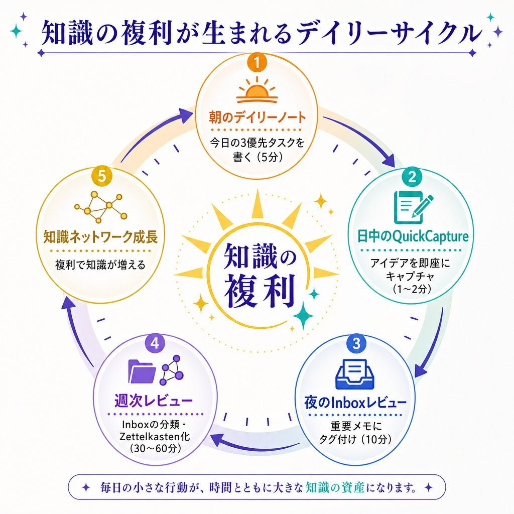
知識の複利が生まれるデイリーサイクル
**継続のコツは「完璧を目指さない」ことだ。
**
デイリーノートに3行しか書けなかった日があっていい。
週次レビューが15分しかできなかった週があっていい。
**「続けること」が「完璧にやること」よりはるかに価値がある。
**
6ヶ月後、あなたのObsidianには数百のノートが積み重なっている。
1年後、グラフビューには美しい知識のネットワークが広がっている。
3年後、そのネットワークはあなたの思考を加速し、アウトプットを量産し、収益を生み出す「資産」になっている。
**知識の複利は、今日から始めた人だけが享受できる。
**
おわりに
本書を読み終えた今、あなたは「知識を資産に変える地図」を持っている。
第1章で学んだのは、なぜObsidianがノート墓場になるのか——設計思想の欠如が問題であり、ローカル・Markdown・リンクという哲学がその解決策であることだ。
第2章では、PARA×Zettelkastenというハイブリッド設計術を学んだ。
情報を「行動との関連性」で分類し、価値あるアイデアを「原子ノート」として切り出す仕組みだ。
第3章では、リンクとDataviewが「思考のインフラ」になることを実感してもらった。
グラフビューに広がる知識のネットワークは、あなたの思考の地図そのものだ。
第4章では、AIとの連携で知識生産を加速する方法を解説した。
Web Clipper、Copilot、Smart Connections——AIはObsidianの「思考パートナー」になった。
そして第5章では、蓄積した知識資産をブログ・電子書籍・副業収入に変換する道筋を示した。
しかし、**最も重要なのは今日から始めることだ。
**
「完璧な設定が完成してから」は永遠に来ない。
今日、デイリーノートに3行書く。
今日、気になったWebページをWeb Clipperで保存する。
今日、一つのアイデアを原子ノートとして書いてみる。
その小さな一歩が、1年後・3年後の大きな資産に変わる。
**知識の複利は、今日始めた人だけに訪れる。
**
あなたのObsidianが、豊かな知識資産エンジンへと育つことを願っている。
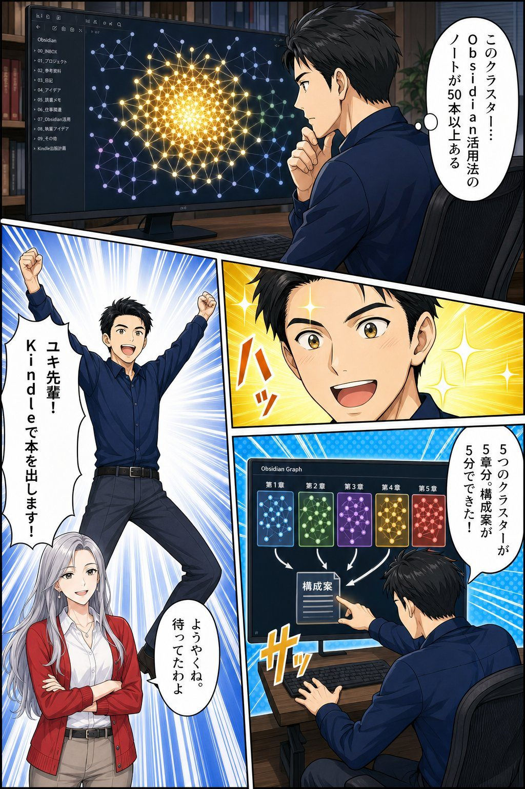
© 竹谷知悦 / 特別プレゼント版